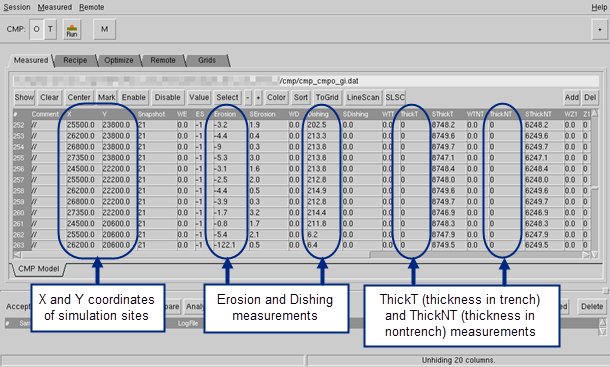
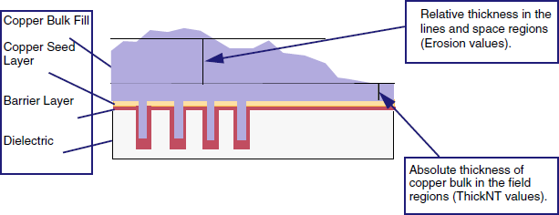
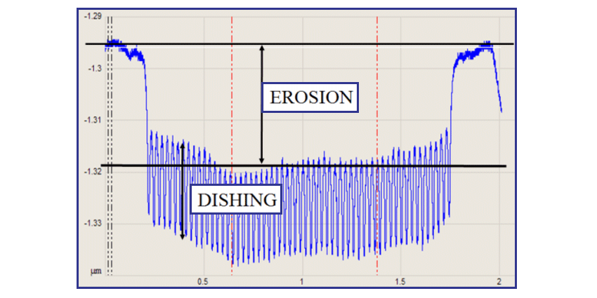

Measured data
files (MD file, also called an MD table (MDT)) are required for
the initial optimization runs. The initial file includes only the
measured data and is based on the test layout.
Figure 1. Measured Data File in CMP Model Builder
Prerequisites
Created
initial process recipe file
Specified
sampling sites for thickness measurements
Measured
the thickness at the sampling sites on your test wafer after ECD
and CMP
Procedure
- Add the following heading
values to your spreadsheet if they do not already exist.
X Y Snapshot WE ES Erosion WD Dishing WTNT ThickNT
- Input the X Y coordinates
of the sampling sites if they do not already exist.
- Input the following values:
thickness for field (non-trench) areas (ThickNT)
— see Figure 2 for where to measure.
weighting for the thickness
(WTNT) — values should be between 0 and 1. Values above 0.8 indicate
a high confidence level. Values below 0.8 should be disabled, or possibly
measured again.
absolute copper thickness
for ECD for platen 1.
absolute oxide thickness
for platen 3.
For WTNT, values above 0.8
indicate high confidence.
- Input the erosion (Erosion)
and dishing (Dishing) values calculated from line scans and AFM
measurements. Erosion values are relative to a particular ThickNT
measurement; track the ThickNT value in the ES column.
Erosion
and dishing values are calculated from line scans after test wafers
have been through the manufacturing and CMP processes that are modeled.
These calculated values are relative thicknesses that are input
into the erosion and dishing values in the MD file. Relative thickness
measurements are shown in Figure 2 and Figure 3. Line scans also show how these values
can be calculated. They are calculated from line scans with the
following formulas:
- Go to to
save the process recipe file and the measured data file.
Figure 2. Absolute and Relative
Thickness
Figure 3. Measuring Erosion
and Dishing
Results
Other columns for the MD file are
set to 0 prior to initiating the calibration process.
These values are adjusted following
the simulation run. Press + to
expand and - to contract
the hidden columns.
The following parameters in your spreadsheet
should now have data values.